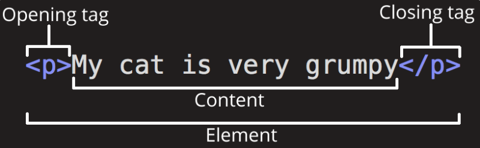

4 Bases para el “raspado web” (web scraping) en páginas estáticas.
4.1 Archivos HTML (HyperText Markup Language)
Una página web es un archivo de texto plano que utiliza la extensión “.html” (Riva Quiroga, 2022).
Al contenido de ese archivo se le agregan ciertas etiquetas para indicar a qué corresponde cada uno de sus elementos, lo que permite darle la estructura necesaria para que se visualice correctamente en un navegador.
Ejemplo:
<html>
<head>
<meta charset="UTF-8">
<title>Título</title>
</head>
<body>
<h1 id='primero'>Título</h1>
<p>Texto.; <b>Texto en negrita.</b></p>
</body>
</html>
HTML tiene una estructura jerárquica formada por elementos que consisten en una etiqueta de inicio (por ejemplo
Las partes principales del elemento son:
La etiqueta de apertura: consiste en el nombre del elemento (en este caso, p), encerrado por paréntesis angulares (< >) de apertura y cierre. Establece dónde comienza o empieza a tener efecto el elemento —en este caso, dónde es el comienzo del párrafo—.
La etiqueta de cierre: es igual que la etiqueta de apertura, excepto que incluye una barra de cierre (/) antes del nombre de la etiqueta. Establece dónde termina el elemento —en este caso dónde termina el párrafo—.
El contenido: este es el contenido del elemento, que en este caso es sólo texto.
El elemento: la etiqueta de apertura, más la etiqueta de cierre, más el contenido equivale al elemento.
Hay más de 100 elementos HTML. Algunos de los más importantes son:
- Cada página HTML debe estar en un elemento
<html>, y debe tener dos hijos:<head>, que contiene metadatos de documentos como el título de la página, y<body>, que contiene el contenido que ve en el navegador.
<p>
Hola! Mi <b>nombre</b> es Juan.
</p>Los hijos (children) son los elementos contenidos dentro de otros elementos. El elemento <p> de arriba tiene un hijo, el elemento <b>. El elemento <b> no tiene hijos, pero sí tiene contenido (el texto “nombre”).
Etiquetas de bloques como
<h1>,<section>(sección),<p>(párrafo), y<ol>(lista ordenada) forman la estructura general de la página.Etiquetas en línea como
<b>(negrita),<i>(itálica), y<a>(enlace) dan formato al texto dentro de las etiquetas de bloque.
Los elementos pueden tener atributos:
<p class = "clase_1"> Párrafo.</p>Los atributos contienen información adicional sobre el elemento que no aparecerá en el contenido. En este ejemplo, el atributo class es un atributo de identificación de referencia a determinadas propiedades.
Ejemplo:
<html>
<head>
<style>
h1.estilo1 {
color: blue;
}
p.estilo2 {
color: red
}
</style>
</head>
<body>
<h1 class = "estilo1">Encabezado</h1>
<p class = "estilo2">Primer párrafo.</p>
<p>Segundo párrafo.</p>
</body>
</html>| Atributo | Descripción | Etiquetas |
|---|---|---|
| id | Identificador único para un elemento | Todas |
| class | Especifica una o más clases CSS para un elemento | Todas |
| src | Especifica la URL de un recurso externo, como imágenes o scripts | <img>, <script>, <iframe>, <audio>, <video> |
| href | Define la URL de un enlace | <a>, <link> |
| alt | Texto alternativo para imágenes | <img>, <area> |
| title | Texto emergente cuando el usuario pasa el cursor sobre un elemento | Todas |
| style | Define estilos CSS en línea | Todas |
| disabled | Deshabilita un elemento de entrada | <button>, <input>, <select>, <textarea> |
| placeholder | Texto de sugerencia en campos de entrada | <input>, <textarea> |
| readonly | Hace que un campo de entrada sea de solo lectura | <input>, <textarea> |
| required | Indica que un campo de entrada es obligatorio | <input>, <select>, <textarea> |
| type | Define el tipo de entrada | <input> |
| value | Especifica el valor de un elemento de entrada | <input>, <option>, <button> |
| name | Nombre del elemento para envío en formularios | <input>, <textarea>, <select>, <form> |
Tip
Un recurso de consulta recomendado es MDN Web Doc
4.2 Extracción de datos
Este apartado es una adaptación de la Unidad 24 del libro R for Data Science.
En R, el acceso a la información provista desde páginas estáticas puede realizarse utilizando funciones de la librería {rvest}, que puede ser instalada desde el CRAN:
# Instalación de {rvest} (debe realizarse sólo una vez)
install.packages("rvest")Luego, toda vez que deseemos utilizar la librería {rvest}, deberemos invocarla por medio de la función library():
library("rvest")html_cn_22 = read_html("https://censo.gob.ar/index.php/datos_definitivos/")
html_cn_22{html_document}
<html class="html" lang="es-AR">
[1] <head>\n<meta http-equiv="Content-Type" content="text/html; charset=UTF-8 ...
[2] <body class="page-template-default page page-id-37582 wp-custom-logo wp-e ...
Nota
{rvest} incluye la función minimal_html() que permite escribir html, que utilizaremos para ilustrar el modo de funcionamiento con ejemplo simples.
Por Ejemplo:
html = minimal_html(
"
<p>Esto es un párrafo</p>
<ul>
<li>Esto es una lista</li>
</ul>
"
)
html{html_document}
<html>
[1] <head>\n<meta http-equiv="Content-Type" content="text/html; charset=UTF-8 ...
[2] <body>\n<p>Esto es un párrafo</p>\n <ul>\n<li>Esto es una lista</li>\n ...4.3 Encontrar elementos
CSS (cascading style sheets) define patrones para localizar elementos html, útiles para “rascar” datos web. Por ejemplo:
pselecciona todos los elementos p..titleselecciona todos los elementos con laclase“title”.#titleselecciona el elemento con el atributoidigual a “title”.
Por ejemplo:
html = minimal_html(
"
<h>Esto es un encabezado</h>
<p id='primero'>Esto es un párrafo</p>
<p class='importante'>Esto es un párrafo importante</p>
"
)
html{html_document}
<html>
[1] <head>\n<meta http-equiv="Content-Type" content="text/html; charset=UTF-8 ...
[2] <body>\n<p id="primero">Esto es un párrafo</p>\n <p class="importante">E ...La función html_elements() permite encontrar todos los elementos que coinciden con el selector:
html |> html_elements("p"){xml_nodeset (2)}
[1] <p id="primero">Esto es un párrafo</p>
[2] <p class="importante">Esto es un párrafo importante</p>html |> html_elements(".importante"){xml_nodeset (1)}
[1] <p class="importante">Esto es un párrafo importante</p>html |> html_elements("#primero"){xml_nodeset (1)}
[1] <p id="primero">Esto es un párrafo</p>html_element() devuelve el mismo número de salidas que las entradas. Si se aplica a un documento completo, devolverá la primera coincidencia:
html |> html_element("p"){html_node}
<p id="primero">
Nota
Cuando se utiliza un selector que no coincie con ningún elemento, html_elements() devuelve un vector de longitud 0, y html_element() devuelve un valor omitido (NA).
4.4 Selecciones anidadas
Es posible combinar las funciones html_element() y html_elements(). Por ejemplo:
html = minimal_html(
"
<ul>
<li><b>Opción 1</b> es un ejemplo de <i>item</i> con una <span class='tipo'>característica 1</span></li>
<li><b>Opción 2</b> es otro ejemplo de <i>item</i></li>
<li><b>Opción 3</b> es otro <i>item</i> con la característica <span class=tipo'>característica 3</span></li>
</ul>
"
)- Selección de items:
opciones = html |> html_elements("li")
opciones{xml_nodeset (3)}
[1] <li>\n<b>Opción 1</b> es un ejemplo de <i>item</i> con una <span class="t ...
[2] <li>\n<b>Opción 2</b> es otro ejemplo de <i>item</i>\n</li>
[3] <li>\n<b>Opción 3</b> es otro <i>item</i> con la característica <span cla ...Notar lo siguiente:
opciones |> html_element("b"){xml_nodeset (3)}
[1] <b>Opción 1</b>
[2] <b>Opción 2</b>
[3] <b>Opción 3</b>opciones |> html_element(".tipo"){xml_nodeset (3)}
[1] <span class="tipo">característica 1</span>
[2] <NA>
[3] <NA>opciones |> html_elements(".tipo"){xml_nodeset (1)}
[1] <span class="tipo">característica 1</span>4.5 Texto y atributos
La función html_text2() extrae el contenido en texto plano de un elemento html:
opciones |>
html_element("b") |>
html_text2()[1] "Opción 1" "Opción 2" "Opción 3"opciones |>
html_element(".tipo") |>
html_text2()[1] "característica 1" NA NA La función html_attr() extrae datos desde los atributos:
html = minimal_html("
<p><a href='https://es.wikipedia.org/wiki/INDEC'>cats</a></p>
<p><a href='https://es.wikipedia.org/wiki/Agencia_de_Acceso_a_la_Información_Pública_(Argentina)'>dogs</a></p>
")
html |>
html_elements("p") |>
html_element("a") |>
html_attr("href")[1] "https://es.wikipedia.org/wiki/INDEC"
[2] "https://es.wikipedia.org/wiki/Agencia_de_Acceso_a_la_Información_Pública_(Argentina)"4.6 Tablas
Si los datos están almacenados como una tabla html, la importación puede realizarse sin inconvenientes. Las tablas html se construyen con cuatro elementos: <table>, <tr> (table row), <th> (table heading) y <td> (table data). Por ejemplo:
html = minimal_html("
<table class='miTabla'>
<tr><th>x</th> <th>y</th></tr>
<tr><td>1.5</td> <td>2.7</td></tr>
<tr><td>4.9</td> <td>1.3</td></tr>
<tr><td>7.2</td> <td>8.1</td></tr>
</table>
")Luego, para extraer la tabla:
html |>
html_element(".miTabla") |>
html_table()# A tibble: 3 × 2
x y
<dbl> <dbl>
1 1.5 2.7
2 4.9 1.3
3 7.2 8.14.7 Elección del selector adecuado
Usualmente la elección del selector adecuado es la parte más complicada del proceso. Un selector adecuado debe ser específico y sensible.
Existen dos herramientas que pueden facilitar la elección del selector adecuado:
SelectorGadget: es una extensión javascript que genera selectores CCS.Herramientas del motor de búsqueda: seleccionar un objeto y, luego de hacer click derecho, seleccionarinspeccionar. Se desplegará una ventana con la estructura html de la página, centrada en el objeto seleccionado.
Por ejemplo:
html = read_html("https://censo.gob.ar/index.php/datos_definitivos_jujuy/")
# Exploración de "hijos" (children)
html |> html_children()
html |> html_element("body") |> html_children()
# Exploración de todos los enlaces
enlace = html |>
html_elements("a") |>
html_attr("href")
# Exploración de los enlaces de archivos en excel
enlace[grepl(pattern = ".xlsx",
enlace,
ignore.case = TRUE)]
# Exploración de un nodo con un enlace específico (copiado el selector)
html |>
html_element("#elementor-tab-content-1341 > p:nth-child(2) > span:nth-child(1) > a")
# Enlace a un archivo
enlace = html |>
html_element("#elementor-tab-content-1341 > p:nth-child(2) > span:nth-child(1) > a") |>
html_attr("href")
enlace
# Descarga de un archivo
archivo_temp = tempfile(fileext = ".xlsx")
archivo_temp
download.file(enlace, destfile = archivo_temp, mode = "wb")4.8 Librería polite
La librería {polite} tiene como objetivo promover un “raspado” web responsable. Las dos funciones principales del paquete, bow y scrape, definen y llevan a cabo una sesión de recolección de datos web. bow se utiliza para presentar al cliente al host y solicitar permiso para extraer datos (mediante una consulta en el archivo robots.txt del host), mientras que scrape es la función principal para recuperar datos del servidor remoto. Una vez que se establece la conexión, no es necesario volver a usar bow . En cambio, para ajustar una URL de extracción de datos, el usuario puede simplemente indicar la nueva ruta, que actualiza la URL de la sesión, asegurándose de que la nueva ubicación se pueda negociar en robots.txt.
Se puede instalar polite desde el CRAN (una sola vez):
install.packages("polite")Luego
library(polite)
sesion = bow("https://www.indec.gob.ar/", force=TRUE)
print(sesion)
# Título
titulo = scrape(sesion) %>%
html_node("title") %>%
html_text()
print(titulo)
# Enlaces
enlaces = scrape(sesion) %>%
html_nodes("a") %>%
html_attrs_dfr("href")
print(enlaces)
enlaces = scrape(sesion) %>%
html_nodes("a") %>%
html_attrs_dfr("href") |>
dplyr::filter(!is.na(href))
print(enlaces)